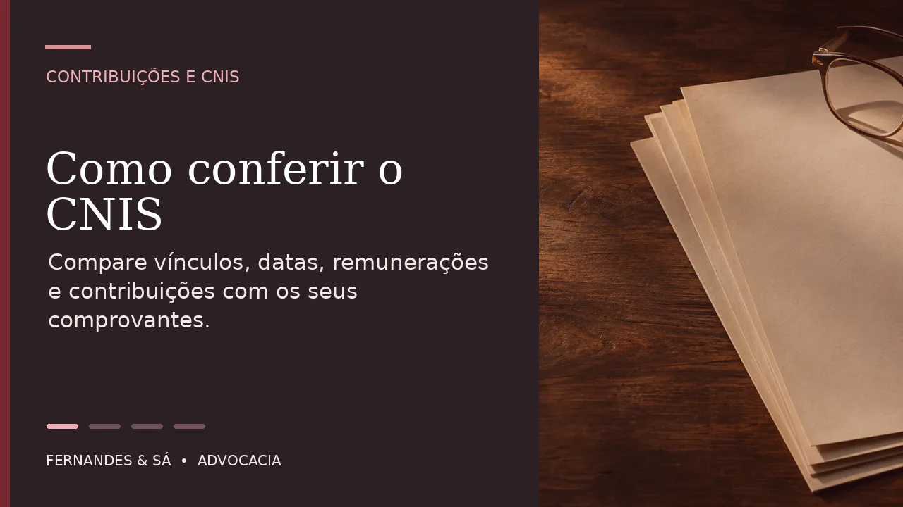
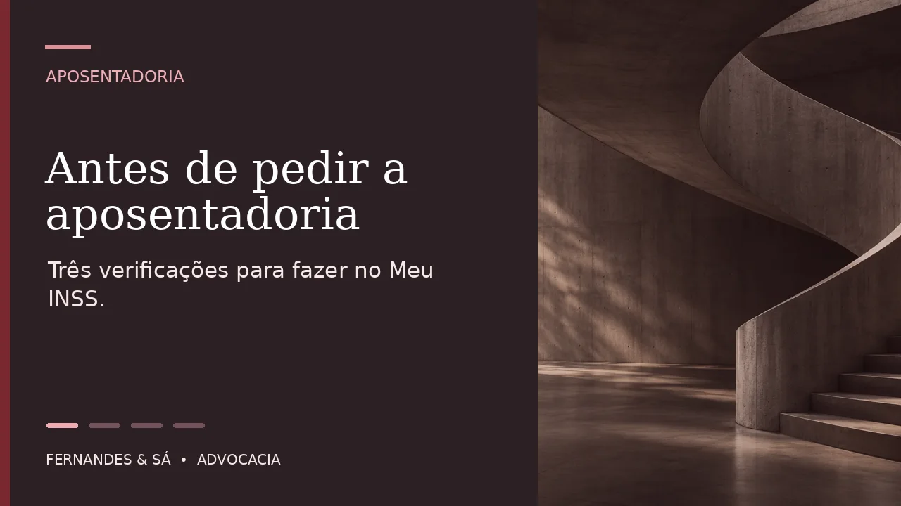
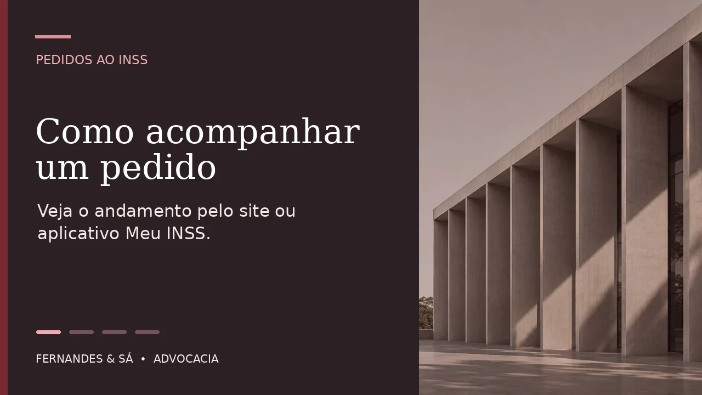

Aposentadoria rural
Na aposentadoria por idade rural, a idade mínima é de 55 anos para mulheres e 60 para homens. É preciso comprovar 180 meses de atividade rural. Os documentos variam conforme a categoria do trabalhador.
Ver requisitos e documentos
Áreas de atuação
Acompanhamos segurados urbanos e rurais desde a análise dos documentos até o pedido no INSS, o recurso administrativo ou a ação na Justiça, quando necessária.
Por idade, por tempo de contribuição, rural, especial e da pessoa com deficiência, incluindo as regras de transição da reforma de 2019.
Benefício assistencial para idosos a partir de 65 anos e pessoas com deficiência em situação de baixa renda.
Auxílio por incapacidade temporária, aposentadoria por incapacidade permanente e auxílio-acidente.
Análise da qualidade de segurado, da condição de dependente e da documentação necessária.
Conferência do CNIS, cálculo do tempo de contribuição e revisão de benefícios já concedidos.
Recurso ao Conselho de Recursos da Previdência Social e ações na Justiça Federal após o indeferimento.
Cada caso depende do histórico de contribuições e dos documentos disponíveis. Fale com o escritório para agendar um atendimento.
Conversar pelo WhatsAppNa aposentadoria por idade rural, a idade mínima é de 55 anos para mulheres e 60 para homens. É preciso comprovar 180 meses de atividade rural. Os documentos variam conforme a categoria do trabalhador.
Ver requisitos e documentosÉ uma indenização que pode ser concedida a segurados de categorias previstas em lei quando um acidente deixa sequela permanente que reduz a capacidade para o trabalho habitual.
Ver quem tem direitoÉ um benefício para dependentes da pessoa falecida, conforme a situação previdenciária dela e a condição de cada dependente. As regras também definem a duração do pagamento.
Ver regras e como pedirGuias previdenciários
Veja quais informações ajudam a identificar as regras aplicáveis ao seu caso.
Idade, tempo de contribuição e carência podem influenciar o direito à aposentadoria. Para quem já contribuía antes da reforma de 2019, também pode haver direito adquirido ou enquadramento em regras de transição.
Comece conferindo seu CNIS. A simulação do Meu INSS usa os dados disponíveis no sistema e serve como estimativa.
Entenda quando podem ser solicitados o benefício por incapacidade e a pensão por morte.
O benefício por incapacidade temporária pode ser devido quando a pessoa segurada fica temporariamente incapaz de exercer seu trabalho ou atividade habitual. A comprovação da incapacidade e os requisitos previdenciários são avaliados no pedido.
A pensão por morte pode ser devida aos dependentes de pessoa segurada falecida. A documentação e a duração do benefício variam conforme o caso.
Saiba como consultar vínculos, remunerações e contribuições no extrato previdenciário.
Ler o guia e ver o checklistDireito Previdenciário



Abra o site ou o aplicativo Meu INSS.
Use a busca para consultar o CNIS, simular uma aposentadoria ou iniciar um pedido.
Em “Consultar Pedidos”, verifique o andamento, eventuais exigências e o prazo para respondê-las.
Depende da modalidade e de quando você começou a contribuir. A regra aplicável pode combinar idade, tempo de contribuição e carência. Quem já contribuía antes da reforma de 2019 pode se enquadrar em uma regra de transição. O Meu INSS estima quanto falta com base nos registros disponíveis.
Doenças de diferentes tipos podem dar direito ao benefício quando a incapacidade para o trabalho está comprovada e os demais requisitos são atendidos. O INSS considera o impacto da condição nas suas atividades, a qualidade de segurado e a carência, quando exigida. Algumas doenças e situações dispensam a carência.
Identifique a modalidade e confira se você cumpre seus requisitos de idade, carência ou tempo de contribuição. Revise vínculos, contribuições e remunerações no CNIS e reúna os comprovantes dos períodos que precisam ser demonstrados, inclusive os de atividade rural, quando for o caso.
O valor depende do benefício, do histórico de contribuições, da regra de cálculo e dos limites aplicáveis. Uma contribuição maior pode alterar a média usada em alguns cálculos, mas o impacto depende do conjunto das contribuições e da regra do benefício.
Depende da combinação. Aposentadoria e pensão por morte podem ser recebidas juntas, mas, conforme a regra aplicável, um dos valores pode ser reduzido. Já o auxílio-acidente é incompatível com aposentadoria, e o BPC, em regra, é incompatível com aposentadoria ou pensão previdenciária recebida pela mesma pessoa.
Carência é o número mínimo de contribuições mensais exigidas para alguns benefícios. Tempo de contribuição é a duração dos períodos reconhecidos para fins previdenciários. Um período pode contar para tempo de contribuição e ter tratamento diferente para carência.
Leia a comunicação da decisão no Meu INSS para identificar o motivo. Se discordar, consulte o serviço oficial de recurso ordinário, que informa a documentação exigida e o prazo para recorrer.
O Benefício de Prestação Continuada (BPC) é um benefício assistencial para pessoas com deficiência e pessoas a partir de 65 anos que atendam aos critérios do programa. Ele independe de contribuição ao INSS.
Acompanhe dicas sobre benefícios, prazos e novidades do INSS no nosso perfil.
Sobre nós
Na Fernandes & Sá Advocacia, trabalhamos para promover a justiça social e orientar quem precisa de amparo jurídico em questões de Direito Previdenciário e Seguridade Social.
Atendemos segurados urbanos e rurais em questões sobre os diferentes benefícios previdenciários. Analisamos cada caso individualmente para orientar o cliente sobre seus direitos e buscar o melhor resultado possível para sua situação.
Segunda a sexta, das 8h às 18h
Sábado e domingo: fechado
OAB/RO 11772
OAB/RO 15992